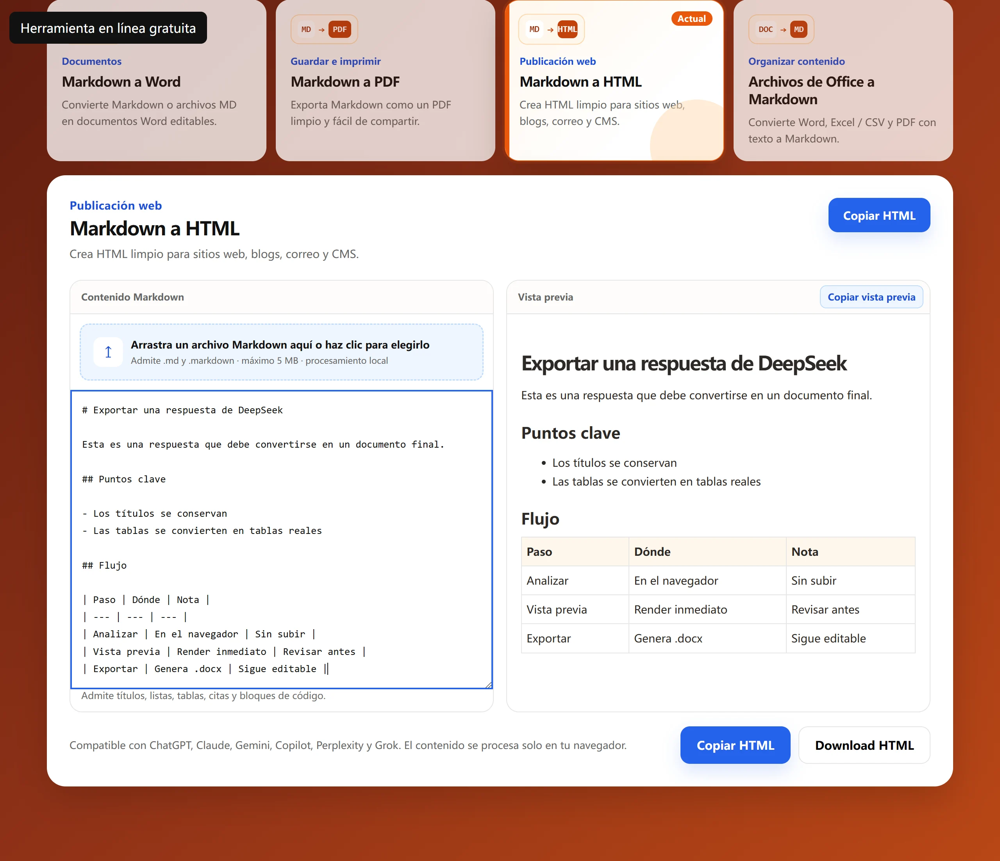

Markdown a HTML
Cómo convertir Markdown en HTML limpio
El HTML es útil cuando el contenido Markdown debe pasar a un CMS, un blog, un editor de correo o una página estática que no acepta Markdown directamente.

Qué contiene realmente la descarga
La descarga es un documento HTML5 completo, no un fragmento. Incluye el doctype, un atributo lang, la declaración UTF-8, una etiqueta viewport y un elemento title. Tu contenido convertido va en el body.
Lo que deja fuera a propósito
- Las hojas de estilo.No se adjunta ningún CSS: la página hereda lo que el sitio de destino proporcione.
- Los scripts.El resultado es maquetación estática, sin comportamiento asociado.
- La interfaz del sitio.No se incluye navegación, pie de página ni marca de Aixuno.
Así el archivo es un punto de partida para una plantilla de CMS y no una página terminada — que suele ser lo deseado, porque pegar HTML con estilos en un sitio existente acaba chocando con su propio sistema de diseño.
Cuándo HTML es el destino correcto
| Destino | Por qué funciona HTML | Qué ajustar primero |
|---|---|---|
| Blog o CMS | Las etiquetas semánticas encajan con la mayoría de los editores | Quita el envoltorio del documento si tu CMS aporta uno |
| Plantilla de correo | Encabezados y listas sobreviven | Los clientes de correo exigen CSS inline, que se añade aparte |
| Sitio estático | Listo para guardar como parcial | Quita el doctype al integrarlo en una plantilla existente |
Preguntas sobre el HTML resultante
¿La exportación incluye CSS?
No. El archivo solo lleva estructura: hereda el estilo del sitio donde se coloque.
¿Puedo pegar el resultado en un CMS?
Sí. Quita el doctype y el envoltorio body cuando el CMS ya aporta el esqueleto del documento.
¿El archivo es válido por sí solo?
Sí. Es un documento HTML5 completo, con doctype, charset, viewport y title.
Si el HTML no se ve bien
- La página no tiene estilos.Es lo esperado: no se incluye CSS. Añade la hoja de estilos en el destino.
- Las etiquetas aparecen como texto visible.Los angle brackets estaban escapados en la fuente: se muestran literalmente en lugar de actuar como maquetación.
- El diseño se rompe dentro de un CMS.El CMS anidó un documento completo dentro de su propia página; conserva solo el contenido del body.